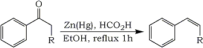

Abstract
Aryl alkenes can be prepared from aryl ketones through reduction by refluxing with amalgamated zinc in a mixture of formic acid and ethanol.
Aldehydes and ketones play a central role in the synthesis of a wide variety of organic compounds. Often the carbonyl group must be removed from a compound when its properties are no longer needed. One of the more commonly used methods for converting carbonyl groups into methyl or methylene groups is the Clemmensen reduction. We wish to report a modification of the Clemmensen reduction procedure which produces aryl alkenes directly from aryl ketones (Eq 1).
Equation 1
The original Clemmensen reduction procedure involved refluxing a mixture of the carbonyl compound, concentrated hydrochloric acid, and amalgamated zinc for 4-10 h.1 While this procedure was successful with many compounds, variations were devised in order to widen the applicability of the reduction.2-4 In some instances the formation of alkenes was observed,1a,4-9 but no generally useful procedures for their preparation have been reported. Aliphatic ketones can be converted into alkenes in moderate yields using amalgamated zinc and chlorotrimethylsilane in ether, but 1-phenyl-1-ethanone gave no alkene under these conditions.10
![[Enlarge]](pictures/arylketone2arylalkene-1.gif){kind=link}
{kind=link}
Our modification of the Clemmensen procedure which gives the highest ratio of alkene to alkane and the highest isolated yields involves refluxing the ketone with amalgamated zinc in 88% formic acid and 95% ethanol for 1 h. Significant results are summarized in the Table. Acetic acid could be used in place of formic acid, but replacement with phosphoric acid, ammonium chloride, or anilinium chloride resulted in a lower ratio of alkene or a very slow reaction. Methanol as the cosolvent was about as effective as ethanol, but cyclohexane, benzene, tert-butyl alcohol, dioxane, or no cosolvent gave a slightly lower ratio of alkene. Zinc amalgamated in the usual manner was used for most experiments and gave the best results. When methylene chloride was used for extraction during the work-up instead of diethyl ether, the isolated yields were improved significantly.2
1-Phenyl-2-propanone and 2-octanone, both alkyl ketones, did not react appreciably under the mild conditions used for aromatic ketones. 1-Phenyl-1-ethanone was reduced to a 16:84 GC ratio of ethylbenzene to styrene, but a distilled yield of only 19% was obtained. A 1H NMR of an undistilled sample showed the presence of a cyclopropyl group which is believed to be formed from a zinc-carbene intermediate (Zn=C) reacting with alkene.12
Rearrangement of the same zinc-carbene intermediate accounts for the formation of alkene. Under the milder Clemmensen reduction conditions used here, apparently aryl ketones easily form the zinc-carbene intermediate, and rearrangement to the alkene is normally the major reaction pathway.
Experimental
Reduction of 1-Phenyl-1-butanone
This procedure was used for all reactions reported in the Table. In a round bottom flask were placed 10.11 g (0.155 mol) of Zn dust, 0.498 g (1.84 mmol) of HgCl2, 10 mL of H2O, 0.5 mL of conc. HCl, and a stir bar. After 10 min of stirring, the liquid was decanted, and any lumps were broken up with a spatula. To the flask were added 20 mL of 88% formic acid, 6 mL of 95% ethanol, and 2.0 mL (13.78 mmol) of 1-phenyl-1-butanone. The mixture was refluxed and stirred for 1 h. The liquid was decanted into a separatory funnel, and the residue stirred with 20 mL of H2O for 5 min. The water was also added to the separatory funnel and the residue stirred with 20 mL of CH2Cl2 for 5 min. The CH2Cl2 was used to extract the aqueous phase. The residue was washed two more times with 20 mL each of CH2Cl2, and the CH2Cl2 was used to extract the aqueous phase each time. The combined CH2Cl2 solution was washed with 1 N NaOH until the wash was basic (60 mL and 30 mL) and with sat. NaCl solution (60 mL) and dried over MgSO4. After filtration and solvent removal, the residue was distilled using a Kugelrohr apparatus to give 1.46 g of product (80% yield based on the molecular weight of the alkene) (bath temp 113-121�C at 43 torr).
The IR and NMR spectra were a good match for that of trans-1-phenyl-1-butene, and the NMR spectrum also showed peaks indicative of the presence of small amounts of cis-1-phenyl-1-butene, butylbenzene, and CH2Cl2. Analysis by GC (10% Carbowax 20M) showed significant peaks at 0.54 min (1.3%), 1.7 min (7.2%), 2.3 min (10.1%) 3.4 min (80.5%). The peaks at 0.54, 1.7, and 3.4 min correspond to the retention times of CH2Cl2, butylbenzene, and trans-1-phenyl-1-butene, respectively. The peaks at 2.3 and 3.4 min were collected by preparative GC. The NMR of the peak at 2.3 min agreed with that reported for cis-1-phenyl-1-butene,13 and the NMR of the peak at 3.4 min matched that of trans-1-phenyl-1-butene.